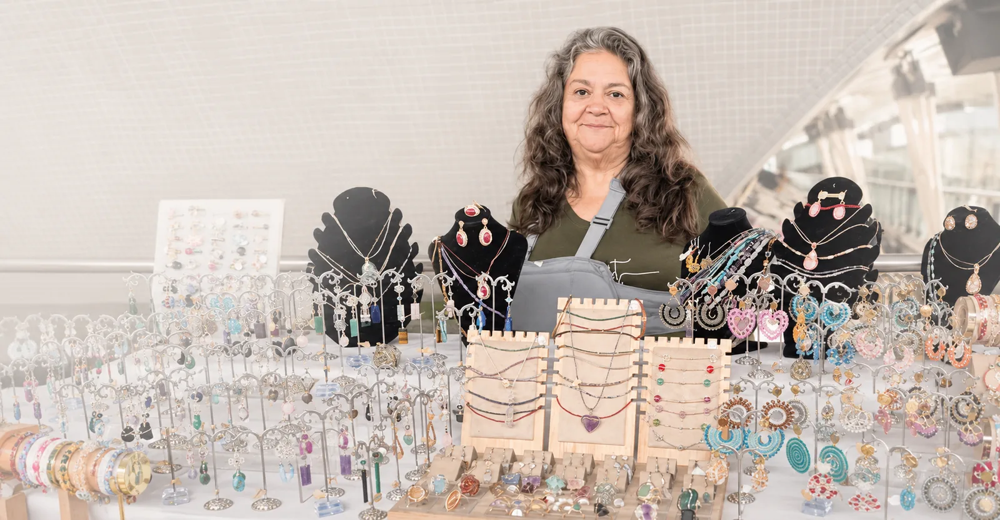
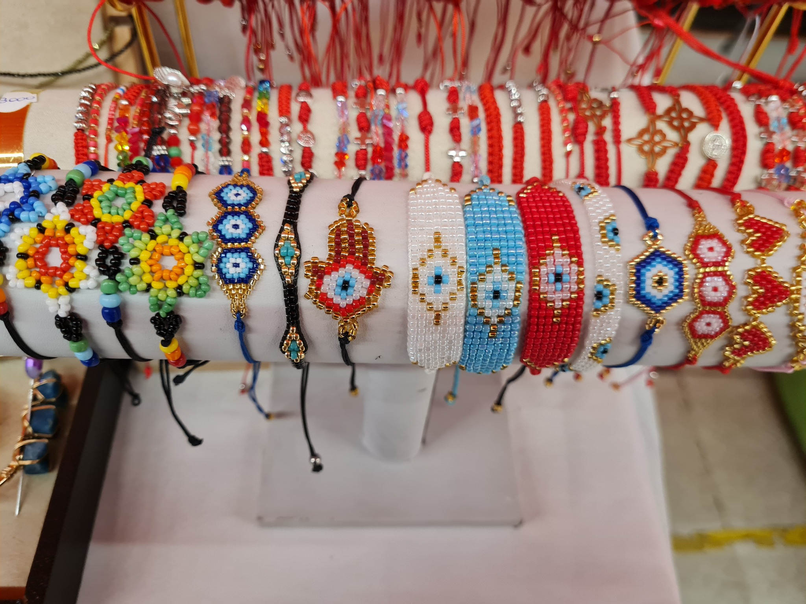

Un espacio para descubrir
Un espacio para descubrirMÁS CERCA DE MAVS
La tienda
Un lugar donde las piezas se pueden mirar de cerca, descubrir sus detalles y encontrar ese accesorio que conecta con tu estilo.
Consulta cómo visitarnosASÍ SE VIVE MAVS
Un encuentro con cada detalle
En nuestro espacio, las piezas y sus colores son protagonistas. Aquí puedes conocer parte del trabajo y las distintas técnicas que dan vida a las colecciones.



¿QUIERES SABER MÁS?Te ayudamos a encontrar
Hablar por WhatsAppTe ayudamos a encontrar
tu próxima pieza.
Escríbenos para consultar disponibilidad, detalles de las colecciones y opciones para conocer nuestras creaciones.